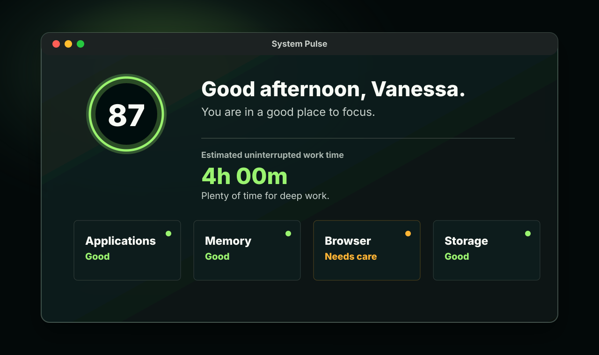

Applications
Names the app most likely to make your Mac feel heavy.

Mac companion for creative flow
A calm Mac companion that tells you if you can keep working, how much focus time you have, and the one recovery step worth taking.
Private beta is ready. Apple-certified public download is being prepared.
Designed like Apple Battery, not Activity Monitor
System Pulse keeps the first answer simple: you are okay, you have enough time, or one thing needs care soon.
What it watches
The app focuses on pressure from open applications, memory, processor load, browser sessions, battery, and disk space. It stays quiet until the Mac is close to reserve.
Names the app most likely to make your Mac feel heavy.
Shows the working room left before app switching starts to drag.
Keeps Chrome and its renderers together so the story makes sense.
Reports used space consistently, with the reserve clearly visible.
Private by design
System Pulse is built for a local, personal check-in. The website promotes the app, but the app itself is designed to keep the computer story on your computer.
Download
The current Mac beta is downloadable from GitHub Actions. The public DMG needs Apple Developer ID signing and notarization before it becomes a polished download for everyone.